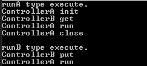
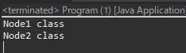

[Design pattern] 2-7. ファサードパターン(Facade pattern)
こんにちは。明月です。
この投稿はファサードパターン(Facade pattern)に関する説明です。
ファサードパターンはデザインパターンで一番よく使うパターンの中で、我々がデザインパターンを知らなくても自然に使うパターンではないかと思います。
このパターンを簡単に説明すると以前に生成されたオブジェクトや関数を仕様により合わせて配置する構造です。

#pragma once
#include <stdio.h>
#include <iostream>
using namespace std;
// ControllerAクラス
class ControllerA {
public:
// 関数
void init() {
// コンソールに出力
cout << "ControllerA init" << endl;
}
// 関数
void run() {
// コンソールに出力
cout << "ControllerA run" << endl;
}
// 関数
void close() {
// コンソールに出力
cout << "ControllerA close" << endl;
}
};
// ControllerBクラス
class ControllerB {
public:
// 関数
void get() {
// コンソールに出力
cout << "ControllerB get" << endl;
}
// 関数
void put() {
// コンソールに出力
cout << "ControllerB put" << endl;
}
};
// Facadeパターンのクラス
class WorkFlow {
private:
// ファサードパターンで使うメンバー変数
ControllerA cona;
ControllerB conb;
public:
// runAタイプの関数
void runA() {
// 仕様の順番で関数を実行
this->cona.init();
this->conb.get();
this->cona.run();
this->cona.close();
}
// runBタイプの関数
void runB() {
// 仕様の順番で関数を実行
this->conb.put();
this->cona.run();
}
};
// 実行関数
int main() {
// インスタンス生成
WorkFlow work;
// コンソールに出力
cout << "runA type execute." << endl;
// FacadeパターンのクラスのrunA関数を実行
work.runA();
// コンソールに出力
cout << endl << "runB type execute." << endl;
// FacadeパターンのクラスのrunB関数を実行
work.runB();
return 0;
}

上の例を説明すると、main関数には、ファサードパターンのクラスで設定したrunAやrunB関数を実行することで、仕様により順番とおりに実行する構造です。
つまり、Facadeクラスには処理する順番を設定して、main関数にはrunA関数を呼び出すことで処理が開始される型の構造になっています。
// インターフェース
interface INode {
// 抽象メソッド
void print();
}
// INodeを継承したNode1クラス
class Node1 implements INode {
// 関数再定義
public void print() {
// コンソールに出力
System.out.println("Node1 class");
}
}
// INodeを継承したNode2クラス
class Node2 implements INode {
// 関数再定義
public void print() {
// コンソールに出力
System.out.println("Node2 class");
}
}
// Facadeパターンが含めているクラス
class Controller {
// メンバー変数
private INode node = null;
// メンバー変数のインスタンスを生成
private void createNode1() {
// インスタンス生成
node = new Node1();
}
// メンバー変数のインスタンスを生成
private void createNode2() {
// インスタンス生成
node = new Node2();
}
// 実行
private void execute() {
// メンバー変数がnullではなければ
if (node != null) {
// print関数実行
node.print();
} else {
// nullの場合はエラー処理
throw new NullPointerException("Please class init.");
}
}
// Node1クラスのインスタンスを生成して実行
public void execType1() {
// インスタンス生成
createNode1();
// 実行
execute();
}
// Node2クラスのインスタンスを生成して実行
public void execType2() {
// インスタンス生成
createNode2();
// 実行
execute();
}
}
// 実行クラス
class Program {
// 実行関数
public static void main(String[] args) {
// Contorllerインスタンス生成
var controller = new Controller();
// execType1関数を実行
controller.execType1();
// execType2関数を実行
controller.execType2();
}
}

ファサードパターンだっても別にクラスを生成する必要はなくて、Controllerの型でオブジェクトの各処理はprivateで処理して、クラスの外部ではファサードパターンでアクセスが可能にするようにexecType1関数やexecType2関数みたいに作成することが一般的ですね。
using System;
using System.Reflection;
using System.Linq;
// Nodeクラス
class Node
{
// プロパティ
public string Data { get; set; }
}
// 抽象クラス
abstract class AController
{
// ファサードパターンの関数
public void Route(string url)
{
// パラメータのデータを「/」で切り分ける。
var route = url.Split('/');
// パラメータ変数
object data = null;
// 切り分けったデータ個数が1より大きい場合
if (route.Length > 1)
{
// 「?」で文字列を切り分ける。
var ps = route[1].Split('?');
// ps個数が0より大きい場合
if (ps.Length > 0)
{
// パラメータインスタンスを生成する。例: Nodeクラスのインスタンス生成
data = Type.GetType(ps[0]).GetConstructors(BindingFlags.Instance | BindingFlags.Public)
.FirstOrDefault()?.Invoke(null);
}
// パラメータデータがnullではないし、切り分けったパラメータデータ個数が1より大きい場合
if (data != null && ps.Length > 1)
{
// プロパティ取得
var properties = data.GetType().GetProperties(BindingFlags.Instance | BindingFlags.Public);
// 「&」で文字列を切り分ける。
foreach (var p in ps[1].Split('&'))
{
// 「=」で文字列を切り分ける。
var o = p.Split('=');
// 2個の場合
if (o.Length == 2)
{
// プロパティに値を入れる。
properties.Where(x => string.Equals(x.Name, o[0], StringComparison.OrdinalIgnoreCase))
.FirstOrDefault()?.SetValue(data, o[1]);
}
}
}
}
// 切り分けた個数が1より大きい場合
if (route.Length > 0)
{
// メソッドを探す。
var methods = this.GetType().GetMethods(BindingFlags.Instance | BindingFlags.Public);
// 実行
methods.Where(x => string.Equals(x.Name, route[0], StringComparison.OrdinalIgnoreCase))
.FirstOrDefault()?.Invoke(this, new object[] { data });
}
}
}
// AControllerクラスを継承する。
class Controller : AController
{
// 関数
public void Index(Node node)
{
// コンソールに出力
Console.WriteLine("Contorller Index is executed, node data - " + node.Data);
}
}
// 実行クラス
class Program
{
// 実行関数
static void Main(String[] args)
{
// Contorllerインスタンス生成
var control = new Controller();
// urlを入力して実行する。
control.Route("Index/Node?data=hello world");
// 任意のキーを押してください
Console.WriteLine("Press any key...");
Console.ReadKey();
}
}
実務でよく使うファサードパターンで例を作成しました。
実は上にはファサードパターンだけではなく、interpreterパターンも含めています。Main関数には我々がWebでよく使うurlの値を入れました。
実は文字列切りは正規表現式を利用して切り分けるべきですが、個人的に正規表現式が得意な分野でもないし、面倒なのでただSplitで切り分けました。
つまり、MVCモデルで上みたいにウェブブラウザで呼び出すとRoute関数を通って関数を探すことになります。そしてパラメータに合わせてパラメータクラスのインスタンスも生成して呼び出しすることになります。
我々はそのFacadeパターンで作成されているフレームワークで要請メソッドだけ作成すればよいでしょう。つまり、フレームワークのMVC構造はFacadeパターンで実装されていることです。
実はFacadeパターンはこのパターンを知らなくても、もうプログラムを作成する時によく使う方法ですね。
でも、少し理論的なパターン流れを分かれば、上みたいにReflection機能まで追加して応用が可能なパターンを実装することができます。
ここまでファサードパターン(Facade pattern)に関する説明でした。
ご不明なところや間違いところがあればコメントしてください。
- [Design pattern] 3-6. ステートパターン(State pattern)2021/11/17 20:04:47
- [Design pattern] 3-5. メメントパターン(Memento pattern)2021/11/16 20:01:36
- [Design pattern] 3-4. イテレータパターン(Iterator pattern)2021/11/15 19:31:28
- [Design pattern] 3-3. コマンドパターン(Command pattern)2021/11/05 17:01:42
- [Design pattern] 3-2. 責任の連鎖パターン(Chain of responsibility pattern)2021/11/04 19:27:58
- [Design pattern] 3-1. ストラテジーパターン(Strategy pattern)2021/11/03 18:38:52
- [Design pattern] 2-7. ファサードパターン(Facade pattern)2021/11/02 19:32:31
- [Design pattern] 2-6. プロキシパターン(Proxy pattern)2021/11/01 19:42:44
- [Design pattern] 2-5. フライウェイトパターン(Flyweight pattern)2021/10/29 19:48:27
- [Design pattern] 2-4. デコレーターパターン(Decorator pattern)2021/10/28 20:11:13
- [Design pattern] 2-3. ブリッジパターン(Bridge pattern)2021/10/27 20:32:21
- [Design pattern] 2-2. コンポジットパターン(Composite pattern)2021/10/27 20:30:54
- [Design pattern] 2-1. アダプターパターン(Adapter pattern)2021/10/26 19:12:40
- [Design pattern] 1-5. プロトタイプパターン(Prototype pattern)2021/10/22 19:35:45
- [Java] JWT(Json Web Token)を発行、確認する方法2022/03/14 19:12:58
- [Java] 61. Spring bootでRedisデータベースを利用してセッションクラスタリング設定する方法2022/03/01 18:20:52
- [Java] 60. Spring bootでApacheの連結とロードバランシングを設定する方法2022/02/28 18:45:48
- [Java] 59. Spring bootのJPAでEntityManagerを使い方2022/02/25 18:27:48
- [Java] 58. EclipseでSpring bootのJPAを設定する方法2022/02/23 18:11:10
- [Java] 57. EclipseでSpring bootを設定する方法2022/02/22 19:04:49
- [Python] Redisデータベースに接続して使い方2022/02/21 18:23:49
- [Java] Redisデータベースを接続して使い方(Jedisライブラリ)2022/02/16 18:13:17
- [C#] Redisのデータベースを接続して使い方2022/02/15 18:46:09
- [CentOS] Redisデータベースをインストールする方法とコマンドを使い方2022/02/14 18:33:07
- [Design pattern] 3-6. ステートパターン(State pattern)2021/11/17 20:04:47
- [Design pattern] 3-5. メメントパターン(Memento pattern)2021/11/16 20:01:36
- [Design pattern] 3-4. イテレータパターン(Iterator pattern)2021/11/15 19:31:28
- [CentOS] Linux環境(CentOS)でCassandra(NoSQL DB)をインストールする方法(DBeaverブラウザでNoSQL使い方)2021/11/12 17:33:58
- [Design pattern] 3-3. コマンドパターン(Command pattern)2021/11/05 17:01:42